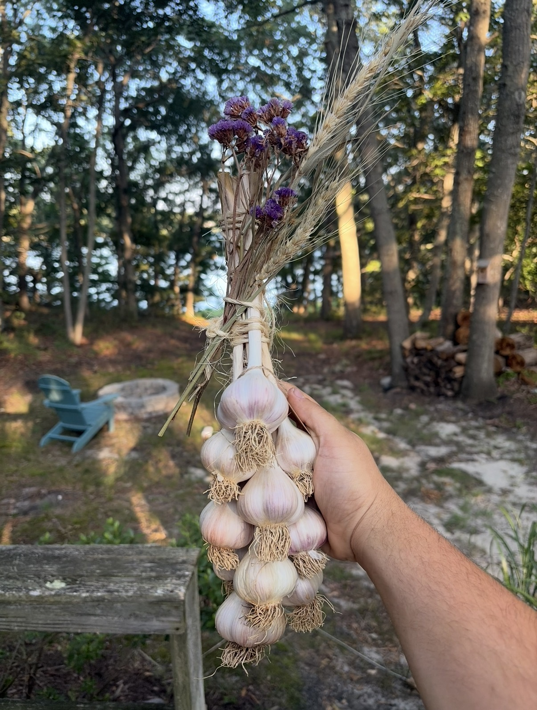
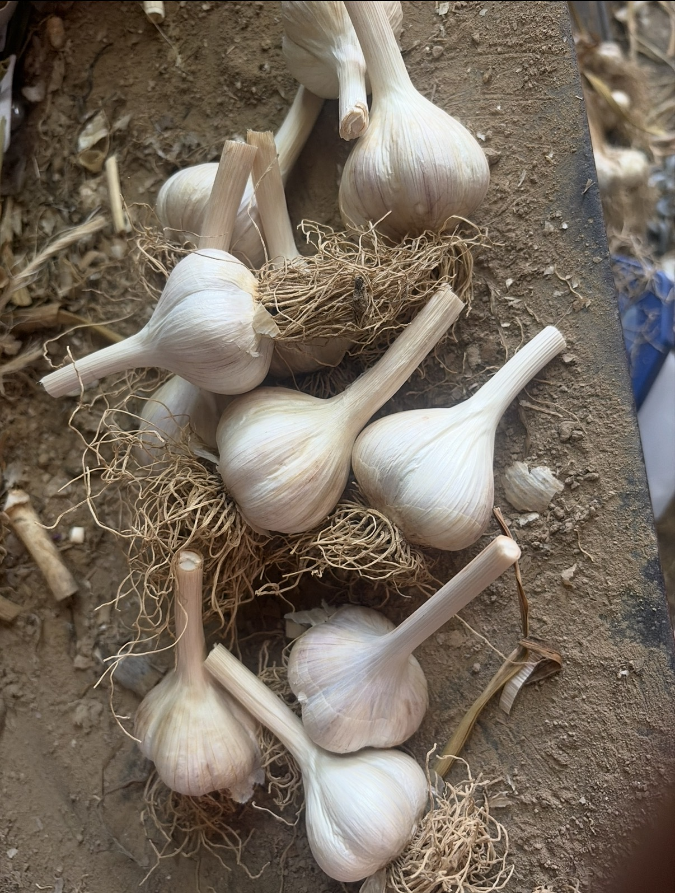
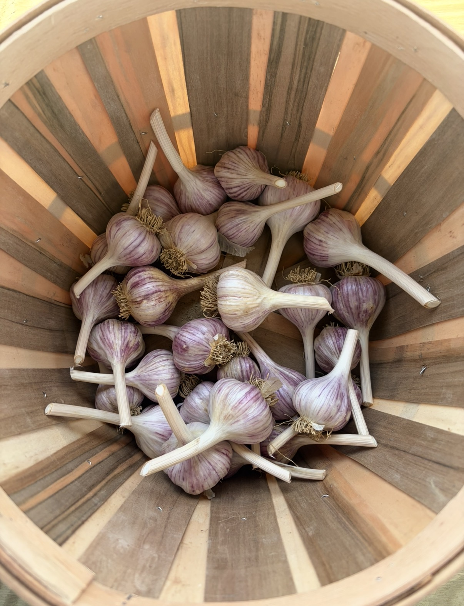
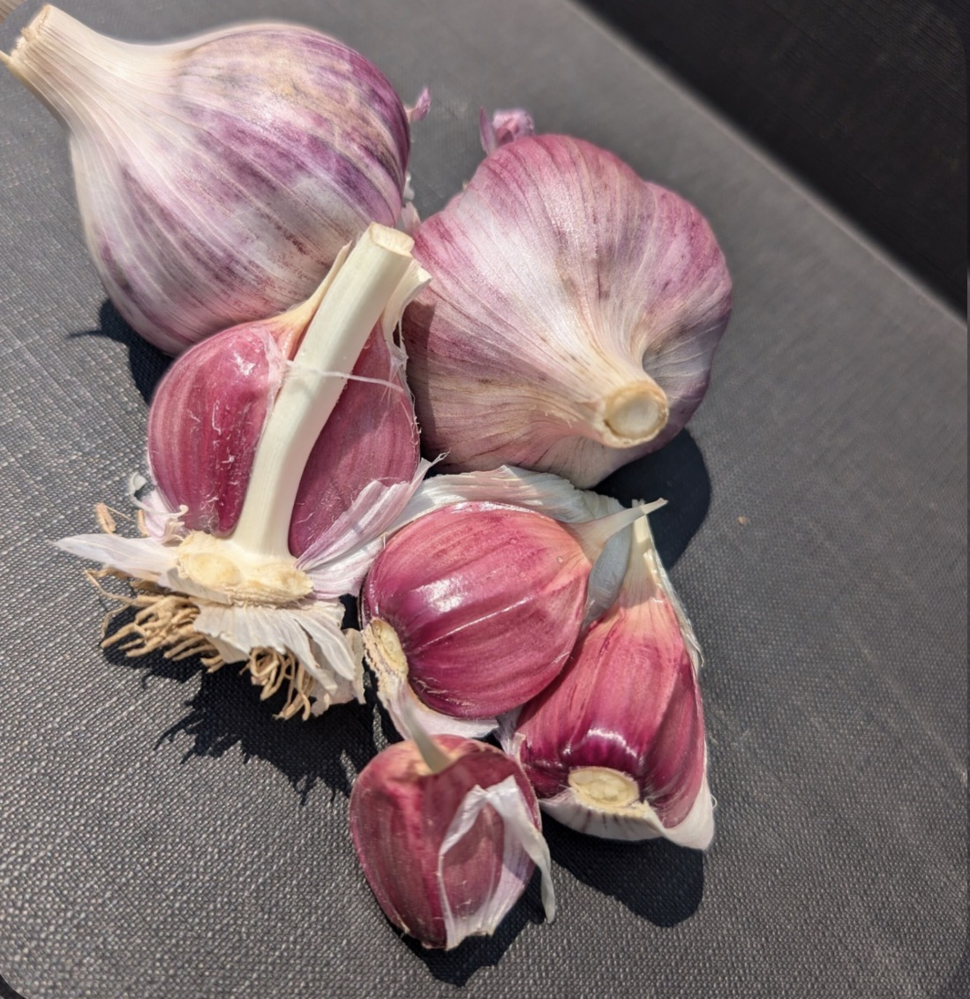
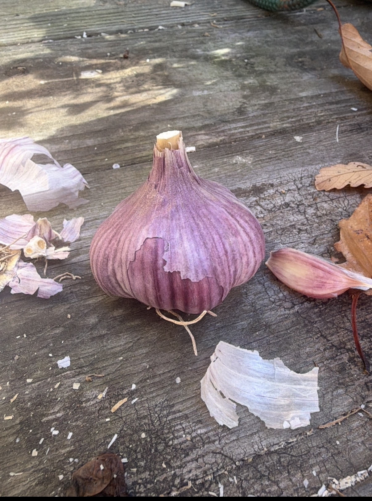
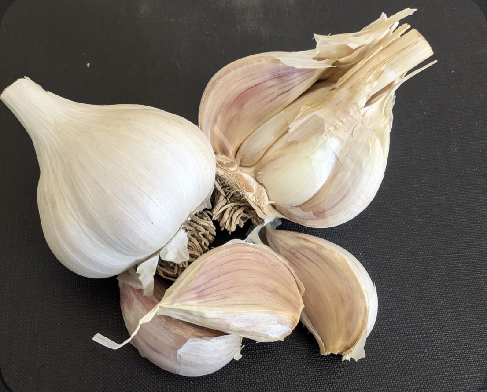

Discover the collection
Every garlic has its own character. Explore our six varieties to learn about their flavor, kitchen uses, and distinguishing features. Each variety is pictured with its own garlic photography.

Established variety · Porcelain
Music
A dependable porcelain type with broad appeal. Large cloves make peeling and preparing garlic especially convenient.
Explore variety →
Established variety · Porcelain
German White
Classic white-wrapped porcelain garlic prized for substantial cloves and versatile flavor.
Explore variety →
Established variety · Purple Stripe
Chesnok Red
A purple-striped hardneck especially appreciated for its depth and sweetness after roasting.
Explore variety →
New addition · Marbled Purple Stripe
Krasnodar Red
A striking purple-toned hardneck being added to our variety lineup. Flavor and performance will be evaluated in our North Fork growing conditions.
Explore variety →
New addition · Purple Stripe
Persian Star
An attractive purple-striped hardneck added for its distinctive appearance and culinary potential.
Explore variety →
New addition · Porcelain
Georgian Fire
A porcelain hardneck known for its punchy raw flavor. A new addition to our garlic trials.
Explore variety →